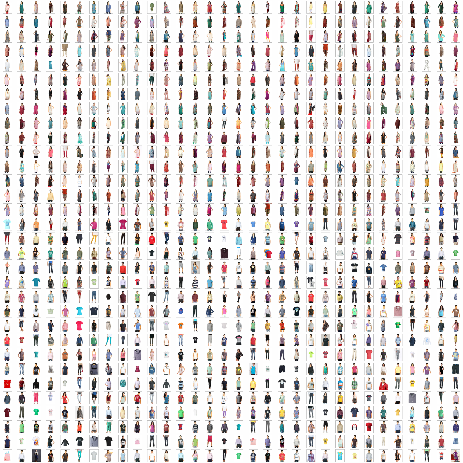
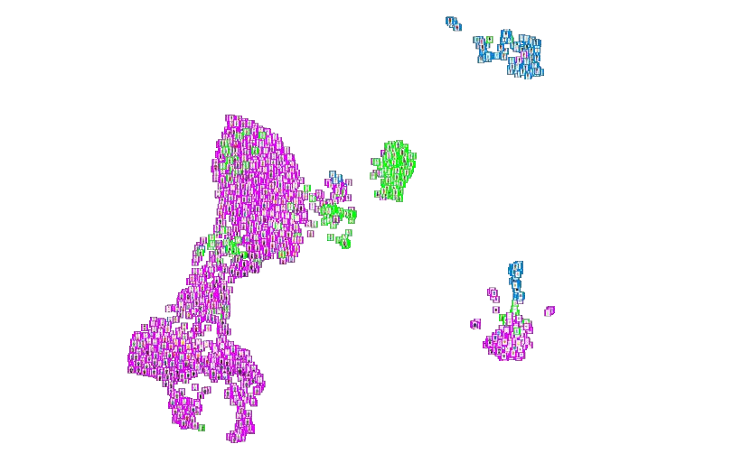
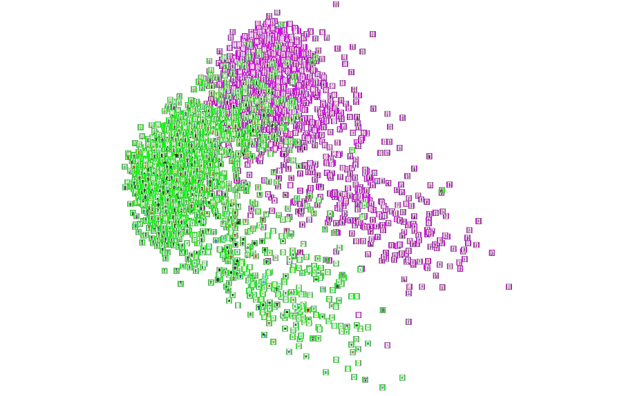
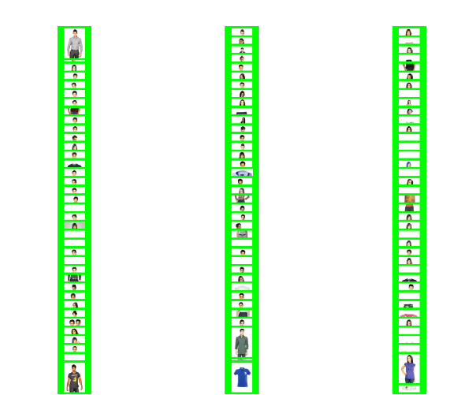

What the Algorithm Notices
I used fashion image embeddings to investigate which visual similarities a computer vision model picks up and which cultural distinctions are harder to recover.
Research question
When fashion photographs are mapped by visual similarity, what puts two garments next to each other? I wanted to see whether a general-purpose model would distinguish culturally specific garments, or group them mainly by visible features such as shape and body coverage.
I curated a target sample of 3,000 catalogue images, balanced between South Asian garments and a comparison group called “universal” in the study. I used catalogue categories to build the groups. Those labels reflect the source catalogue and its assumptions about what counts as a default garment.
From images to a visual map
- Curate the image set. I matched catalogue images to metadata, selected garments by category and used contact sheets to inspect the corpus.
- Extract features. I used pretrained ResNet50 in Keras to turn each image into a 2,048-dimensional vector.
- Compare projections. I mapped the embeddings to two dimensions with PCA, UMAP and t-SNE, then used catalogue attributes and image thumbnails to interpret the groupings.

What the projections showed
In UMAP and t-SNE, garment length and body coverage helped explain several groupings. Some tunics and kurtas appeared near Western tops or dresses, while sarees formed a more distinct group in UMAP. Images of garments photographed without a model also appeared in separate groups. That suggested the way a garment was photographed mattered alongside its shape.
PCA gave a complementary view of broad variation in the dataset. Comparing all three projections helped me distinguish patterns that recurred from patterns that depended on a particular mapping.



What I would test next
The visualisations help surface patterns in this corpus. They cannot establish that the model understands a garment’s cultural meaning. Product photography, inconsistent labels and the model’s training data all affect how the map can be interpreted.
I would verify a sample of catalogue labels by hand and compare ResNet50 with a fashion-specific or image-and-text model. That would help test whether the same groupings recur when the model has access to more context.